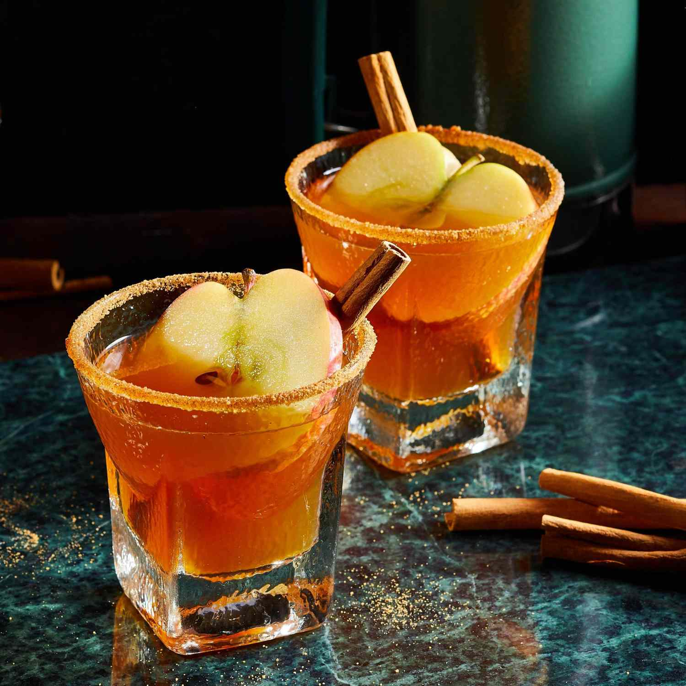

This tasty cocktail will warm your soul-no matter how chilly it is outside or how you take it. Just steep, stir, and pour it into your favorite thermos for cozy sips to go with any fall adventure. Don't like it hot? It can be served chilled, too. Rim glasses with cinnamon sugar and garnish with apple slices and cinnamon sticks.
| Prep Time: | Cook Time: | Additional Time: |
| 5 mins | 5 mins | 5 mins |
| Total Time: | Servings: | Yield: |
| 15 mins | 6 | 6 servings |
| Name | Roll | Class | Age | City |
| Sayma | 1908 | 1st | 20 | Sylhet |
| Toiba | 9087 | 1st | 20 | Sylhet |
| Tanjina | 7609 | 1st | 20 | Sylhet |
| Lamiya | 6543 | 1st | 19 | Sylhet |
Bring cider and maple syrup just to a boil in a saucepan. Remove from heat. Add tea bags, ginger, and cardamom. Let stand, covered, for 5 minutes. Remove and discard tea bags and spices. Stir in bourbon and lemon juice.
Transfer to a warmed 32- to 40-ounce thermos.
You can use pear cider instead of apple.
For a chilled cocktail, after removing tea bags and spices, put saucepan in a bowl of ice water and stir occasionally until chilled. Add bourbon and lemon juice; transfer to a chilled thermos.
The right temp! Warm a thermos by filling it with boiling water. Drain when ready to add the cocktail. For cold drinks, do the same, but fill with ice instead of hot water.The right temp! Warm a thermos by filling it with boiling water. Drain when ready to add the cocktail. For cold drinks, do the same, but fill with ice instead of hot water.The right temp! Warm a thermos by filling it with boiling water. Drain when ready to add the cocktail. For cold drinks, do the same, but fill with ice instead of hot water.The right temp! Warm a thermos by filling it with boiling water. Drain when ready to add the cocktail. For cold drinks, do the same, but fill with ice instead of hot water.
| Name | Roll | Sub 1 | Sub 2 | Total Maeks |
| Sayma | 101 | 80 | 90 | 170 |
| Toiba | 102 | 85 | 95 | 180 |
| Lamiya | 103 | 78 | 88 | 166 |
| Player Name | Runs | Balls | 4s | 6s | Strike Rate |
| Tamim Iqbal | 82 | 56 | 9 | 2 | 146.42 |
| Liton Das | 120 | 95 | 12 | 5 | 126.32 |